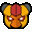
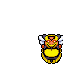
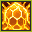
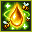
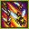
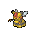
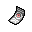

Pokédex / #416

Vespiquen #416
BugFlying
It releases various pheromones to make the grubs in its body do its bidding while fighting foes.
Generation 4 · Sinnoh

Stats
| Attack | 80 | |
|---|---|---|
| Defense | 102 | |
| Sp. Atk | 80 | |
| Sp. Def | 102 |
In the wild
| Wild level | 40–50 |
|---|---|
| HP | 70 |
| Experience | 10 |
| Egg groups | Bug |
Evolution
- Evolves from Combee at level 21.
Moves
| Level | Move | Type | Category | Power | Energy | Cooldown | Effect | |
|---|---|---|---|---|---|---|---|---|
| 1 | Tackle | Normal | Physical | 15 | 15 | 1s | Tackle is one of the most common and basic moves a Pokemon learns. It deals damage with no additional effects. | |
| 1 | Slash | Normal | Physical | 70 | 70 | 11s | Slash deals damage and has an increased critical hit ratio. | |
| 1 | Fell Stinger | Fighting | Physical | 50 | 60 | 10s | When the user knocks out a target with this move, the user's Attack stat rises drastically. | |
| 1 | Destiny Bond | Ghost | Status | – | 120 | 60s | After using this move, if the user faints, the Pokemon that landed the knockout hit also faints. Its chance of failing rises if it is used in succession. | |
| 1 | Gust | Flying | Special | 40 | 40 | 9s | Gust deals damage and has no secondary effect. | |
| 1 | Poison Sting | Poison | Physical | 15 | 20 | 5s | Poison Sting inflicts damage and has a 30% chance of poisoning the target. | |
| 1 | Confuse Ray | Ghost | Status | – | 50 | 9s | Confuse Ray causes the target to become confused. | |
| 5 | Fury Cutter | Bug | Physical | 40 | 40 | 12s | Fury Cutter deals damage and has no secondary effect. | |
| 9 | Pursuit | Dark | Physical | 40 | 40 | 6s | Pursuit deals damage and has no secondary effect. | |
| 13 | Fury Swipes | Normal | Physical | 18 | 45 | 9s | Fury Swipes inflicts damage, hitting 2-5 times per use. | |
| 13 | Bug Bite | Bug | Physical | 60 | 60 | 9s | Bug Bite deals damage and has no secondary effect. | |
| 17 |  | Defend Order | Bug | Status | – | 100 | 60s | The user calls out its underlings to shield its body, raising its Defense and Special Defense by one stage each. |
| 25 | Power Gem | Rock | Special | 80 | 90 | 16s | Power Gem inflicts damage and has no secondary effect. | |
| 29 |  | Heal Order | Bug | Status | – | 90 | 120s | The user calls out its underlings to heal it. The user recovers 50% of its max HP. |
| 29 | Bug Buzz | Bug | Special | 90 | 100 | 21s | Bug Buzz deals damage and has a 10% chance of lowering the target's Special Defense by one stage. | |
| 33 | Toxic | Poison | Status | – | 90 | 20s | Toxic causes the target to be badly poisoned. | |
| 37 | Air Slash | Flying | Special | 75 | 80 | 17s | Air Slash deals damage and has a 30% chance of causing the target to flinch. | |
| 41 | Captivate | Normal | Status | – | 60 | 25s | Captivate lowers the Special Attack of the target by two stages, if they are of the opposite gender to the user. | |
| 45 |  | Attack Order | Bug | Physical | 90 | 95 | 15s | The user calls out its underlings to pummel the target. It has an increased critical hit ratio. |
Field abilities
CutFlash
Special abilities
Pressure
Egg moves
None
Technical machines
Aerial AceDouble TeamFacadeHidden PowerHyper BeamProtectRain DanceRestSecret PowerSludge BombSubstituteToxic
Drops
| Item | Amount | Chance | |
|---|---|---|---|
| pot of moss mug | 1 | 41.7% | |
| acorn | 1 | 38.9% | |
| big mushroom | 1 | 29.2% | |
| reaper cloth | 1 | 13% | |
| essence of a bad dream | 1 | 11.7% | |
| grey-blue powder | 1 | 7.29% | |
 | vespiquen doll | 1 | 0.1% |
| Insect Plate | 1 | 0.025% | |
| Spooky Plate | 1 | 0.025% | |
| held silver powder | 1 | 0.01% | |
 | held spell tag | 1 | 0.01% |